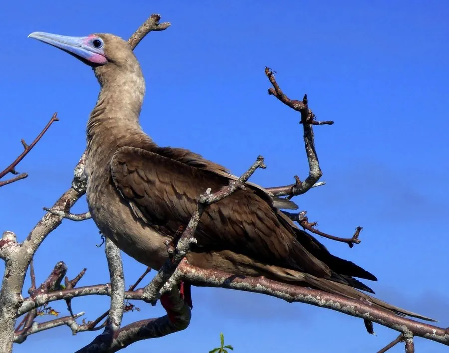

鸟类 · 动物界
红脚鲣鸟 Sula sula

热带海洋的海鸟，成鸟全身白色或褐色、脚鲜红色，善从高空俯冲入水捕鱼，常在大洋岛屿上集群繁殖。
- 分类
- 门脊索动物门纲鸟纲目鲣鸟目科鲣鸟科属鲣鸟属
- 栖息环境
- 热带和亚热带海洋及岛屿，繁殖期在岛上树冠或灌木上营巢
- 地理分布
- 全球热带和亚热带海洋，中国南海诸岛有分布
- 保护级别
- IUCN 无危（LC）；中国南海诸岛有分布
物种志
红脚鲣鸟体长 70–80 cm，体重 0.8–1.2 kg。它的体色有白色型和褐色型等多种色型，共同的标志是鲜红色的脚，喙呈淡蓝色或灰蓝色，脸部裸露的皮肤淡蓝色。它的翅膀尖长，适合在海上长时间飞行。
红脚鲣鸟分布于全球热带和亚热带的海洋，繁殖于太平洋、印度洋和大西洋的热带岛屿，中国南海诸岛有分布。它们以鱼和乌贼为食，常从高空俯冲入水捕鱼，也能在水面休息。繁殖期在岛屿树冠或灌木上集群营巢，每窝产卵 1 枚，孵化约 42–46 天，育雏期较长。红脚鲣鸟在海洋生态中扮演重要角色，其粪便形成的鸟粪资源也曾被人类利用；目前被列为无危物种。
形态与习性
- 食性鱼类和乌贼
- 体长70–80 cm
- 体重0.8–1.2 kg
- 繁殖每窝 1 枚卵，孵化约 42–46 天
- 特征脚鲜红色，喙淡蓝色，有白、褐等色型
- 寿命野外约 20 年
趣味知识
- 红脚鲣鸟最醒目的特征是鲜红色的脚，因此得名。
- 它常从高空俯冲入水捕鱼，落在水面后浮起休息。
- 红脚鲣鸟在中国南海诸岛有分布，是热带海洋的常见海鸟。